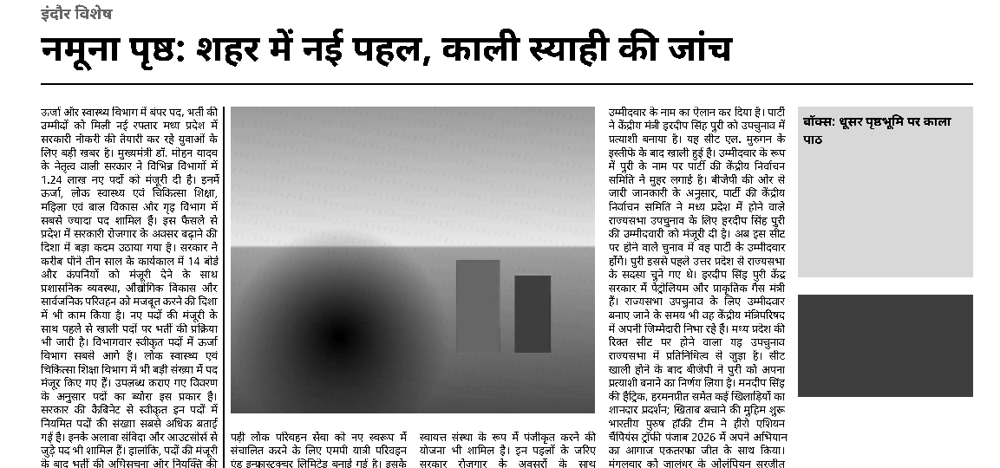
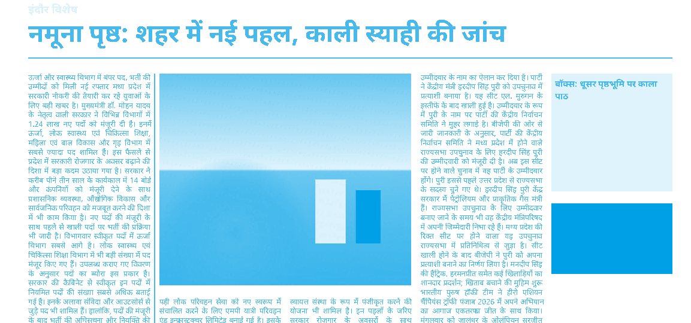
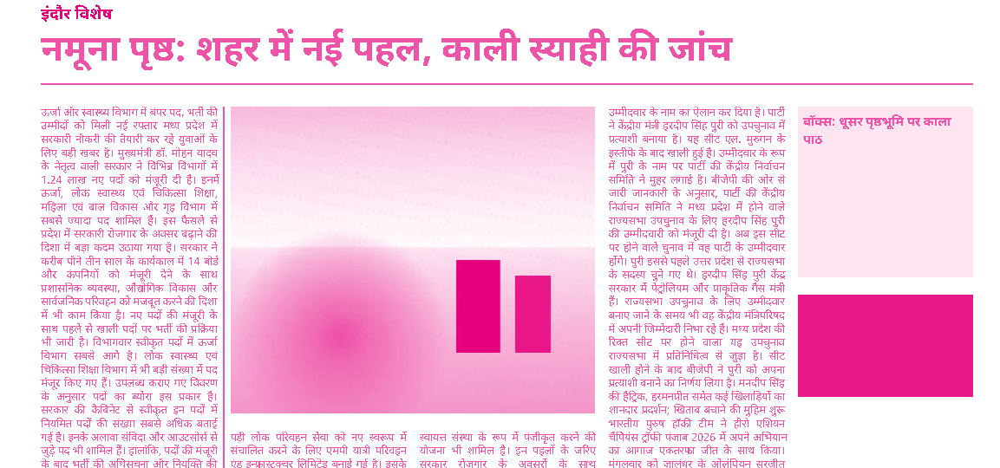
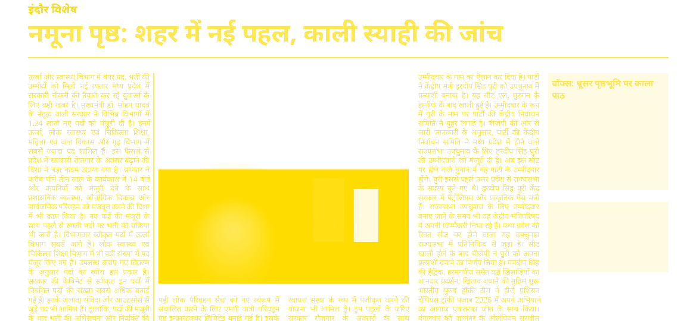
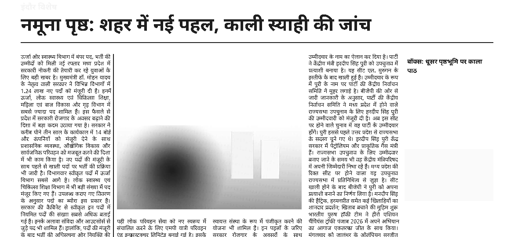
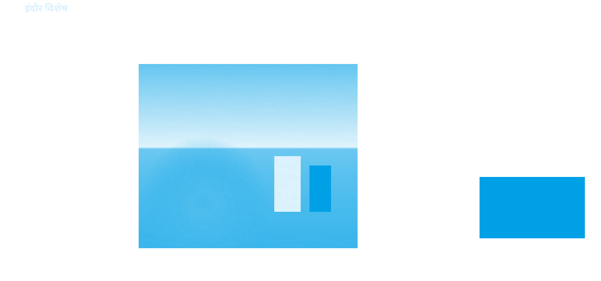
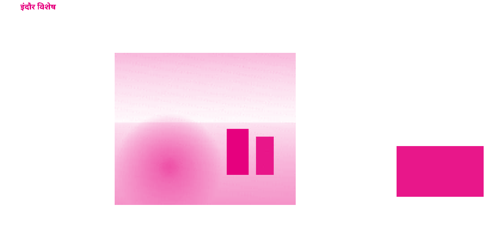
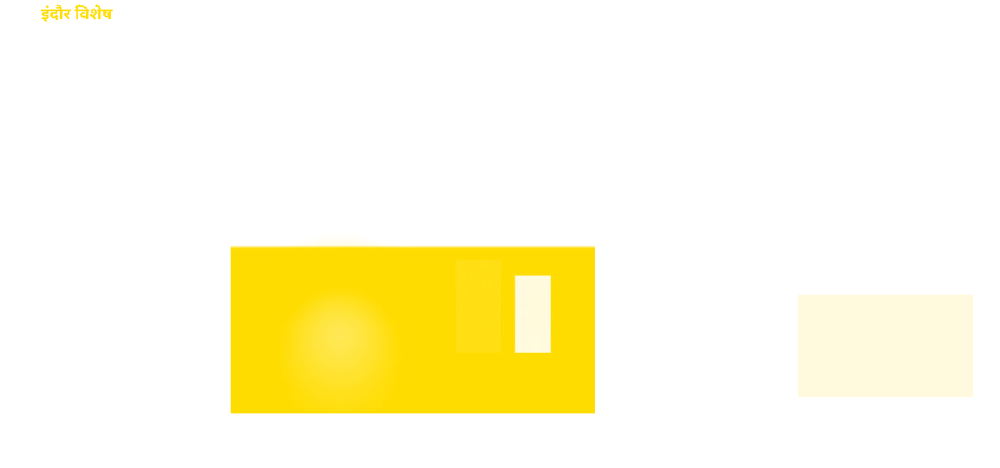
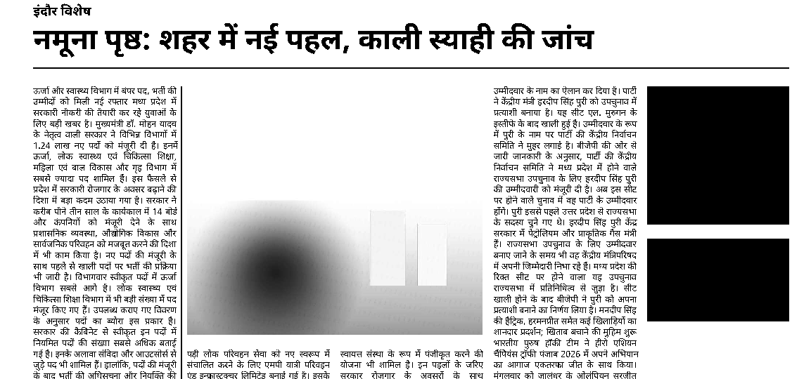

Assumed grid and press. A3, 12 mm margins, 5 columns, 4 mm gutter, 9 pt body (GG-007). The CMYK conversion uses Ghostscript's default profile, not the printer's ICC profile (not received yet). The photo is synthetic, drawn in canvas. G0.black is not recorded: it needs Amal's check of a physical proof.
One test page set the export way (flow() lines drawn absolutely), printed by Chromium, then run through four Ghostscript routes and separated with tiffsep at 200 dpi. GPL Ghostscript 10.04.0 (2024-09-18), 2026-10-30 17:56 UTC. Black operators in Chromium's PDF after Ghostscript rewrote it uncompressed (not Chromium's own bytes):rg (RGB fill) ×2, RG (RGB stroke) ×0, sc/scn (colour space fill) ×0, g (gray fill) ×0, k (CMYK fill) ×0.
| Region: share of inked pixels on K only (green = right for that route) | gray | cmyk | rewrite | blacktext |
|---|---|---|---|---|
| body text | 100% | 0% | 100% | 100% |
| headline | 100% | 0% | 100% | 100% |
| thick rule | 100% | 0% | 100% | 100% |
| hairline | 100% | 0% | 100% | 100% |
| tint box (15% grey) | 100% | 0% | 100% | 100% |
| text on tint | 100% | no solid K | 100% | 100% |
| red kicker | 100% | 0% | 0% | 100% |
| blue panel | 100% | 0% | 0% | 100% |
| photo | 100% | 0% | 0% | 0% |
| Tint tone: median K (want 12-18%) | 15.3% | 0% | 14.5% | 100% |
| Text on tint readable: box area at solid K (want under 50%) | 12.4% | 0% | 12.4% | 100% |
| Photo total ink: max / 99th pct / share over 260% | 100% / 93% / 0% | 296% / 287% / 15.15% | 296% / 287% / 15.15% | 296% / 287% / 15.15% |
| Fonts embedded / subset | 4/4, 4/4 | 4/4, 4/4 | 4/4, 4/4 | 4/4, 4/4 |
| Share of page area with any ink per plate, % (C M Y K; Ghostscript inkcov, not ink amount) | 0.0 0.0 0.0 16.2 | 16.2 16.2 12.8 10.6 | 9.0 9.0 5.6 12.6 | 7.7 7.7 4.3 12.6 |
Recommendation (from the run on this page). Colour pages: the rewrite route (neutral RGB to K-only CMYK, then Ghostscript CMYK). Black text, rules and grey tints are 100% / 100% / 100% on K only, and the red kicker, blue panel and photo keep their colour. Mono pages: the gray route. Do not use blacktext: it also turns the red kicker and the blue panel black (100% and 100% K only). The plain cmyk route puts black text on all four plates (0% K only), so text blurs on any misregistration. Open: the photo reaches 296% total ink (15.15% of its area over 260%) with Ghostscript's default profile. Newsprint presses usually limit total ink to about 240–260%, so the conversion needs the printer's ICC profile (GG-013). The rewrite works on the colour operators Chromium writes today (2 black operator(s) found); a Chromium update that writes colour another way would make it miss silently (GG-025). Caveat: all routes knock out (the colour under black text is cut away). On this page the tint is K only, so that is harmless here. Black text over a photo or colour panel would leave a white halo on any misregistration, and many newspaper presses overprint black instead. Ask the printer (GG-027).
Reviewer (rule 16, 2026-10-30): not OK as it stands. Six conditions:
g, scn, shadings and transparency are missed. The export must fail if any non-CMYK neutral remains.








Rebuild: node scripts/black-spike.mjs (PDFs in spike/out/black/, numbers in spike/out/black.json).